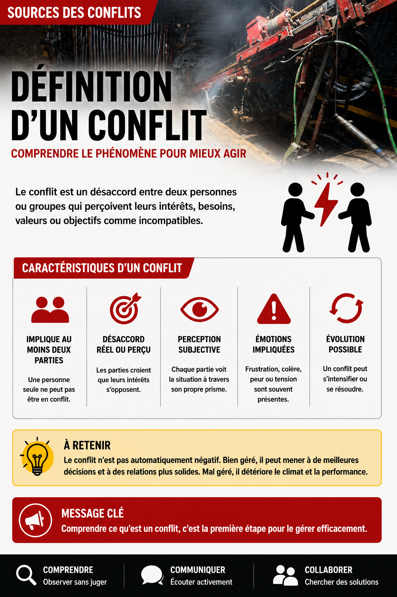
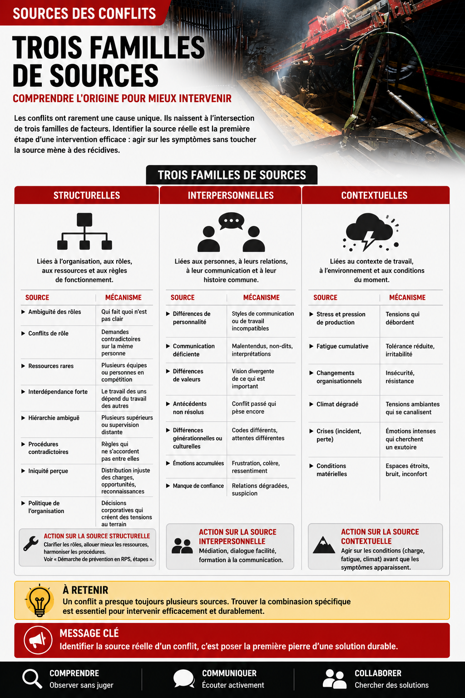

Sources des conflits
Table des matières
- Trois familles de sources
- Sources structurelles
- Sources interpersonnelles
- Sources contextuelles
- Application en mines
L'essentiel : Les conflits ont rarement une cause unique. Ils naissent à l'intersection de facteurs structurels (organisation, ressources, rôles), facteurs interpersonnels (personnalités, communication, antécédents) et facteurs contextuels (pression, fatigue, climat). Identifier la source réelle d'un conflit est la première étape d'une intervention efficace : agir sur les symptômes sans toucher la source mène à des récidives.
{kind=link}

Toucher l'image pour l'agrandirTrois familles de sources
{kind=link}

Toucher l'image pour l'agrandir| Famille | Exemples |
|---|---|
| Structurelles | Rôles flous, ressources limitées, organisation déficiente |
| Interpersonnelles | Personnalités, communication, antécédents, valeurs |
| Contextuelles | Pression, fatigue, climat, changements |
Un conflit a presque toujours plusieurs sources. Trouver la combinaison spécifique est essentiel pour intervenir.
Sources structurelles
| Source | Mécanisme |
|---|---|
| Ambiguïté des rôles | Qui fait quoi n'est pas clair |
| Conflits de rôle | Demandes contradictoires sur la même personne |
| Ressources rares | Plusieurs équipes ou personnes en compétition |
| Interdépendance forte | Le travail des uns dépend du travail des autres |
| Hiérarchie ambiguë | Plusieurs supérieurs, ou supervision distante |
| Procédures contradictoires | Règles qui ne s'accordent pas entre elles |
| Iniquité perçue | Distribution injuste des charges, opportunités, reconnaissances |
| Politique de l'organisation | Décisions corporatives qui créent des tensions au terrain |
Action sur la source structurelle : clarifier les rôles, allouer mieux les ressources, harmoniser les procédures. Voir Démarche de prévention en RPS, étapes.
Sources interpersonnelles
| Source | Mécanisme |
|---|---|
| Différences de personnalité | Styles de communication ou de travail incompatibles |
| Communication déficiente | Malentendus, non-dits, interprétations |
| Différences de valeurs | Vision divergente de ce qui est important |
| Antécédents non résolus | Conflit passé qui pèse encore |
| Différences générationnelles ou culturelles | Codes différents, attentes différentes |
| Émotions accumulées | Frustration, colère, ressentiment |
| Manque de confiance | Relations dégradées, suspicion |
Action sur la source interpersonnelle : médiation, dialogue facilité, formation à la communication.
Sources contextuelles
| Source | Mécanisme |
|---|---|
| Stress et pression de production | Tensions qui débordent |
| Fatigue cumulative | Tolérance réduite, irritabilité |
| Changements organisationnels | Insécurité, résistance |
| Climat dégradé | Tensions ambiantes qui se canalisent |
| Crises (incident, perte) | Émotions intenses qui cherchent un exutoire |
| Conditions matérielles | Espaces étroits, bruit, inconfort |
Action sur la source contextuelle : agir sur les conditions (charge, fatigue, climat) avant que les symptômes apparaissent.
Application en mines
Sources fréquentes en milieu minier
| Source | Configuration minière |
|---|---|
| Hiérarchie de chantier | Foreur, profil RPS et leadership de chantier vs aide-foreur, asymétrie de pouvoir et de compétences |
| Sous-traitance | Équipes externes vs équipes de l'opérateur principal |
| Quarts différents | Tensions jour-soir-nuit, compréhensions divergentes |
| Pression de production | Tensions entre opérations et SST |
| Fatigue de fin de rotation | Conflits qui éclatent en fin de cycle |
| Camp partagé | Cohabitation forcée qui amplifie les tensions latentes |
| Différences générationnelles | Anciens vs nouveaux, méthodes traditionnelles vs nouvelles |
Diagnostic en mine
Avant de gérer un conflit, identifier ses sources
- Est-ce un conflit de tâche, relation, processus ou valeurs?
- Quelles sources structurelles? (ambiguïté de rôle, ressources, organisation)
- Quelles sources interpersonnelles? (personnalités, communication, antécédents)
- Quelles sources contextuelles? (fatigue, pression, changements)
- Y a-t-il asymétrie de pouvoir? (passe-t-on du conflit au harcèlement?)
Documents et outils
| Document | Type | Source |
|---|---|---|
| Notes de cours SST1010, module 10 | Synthèse | UQAT |
| Grille d'analyse de conflit | À adapter | Outils RH |
| Modèle Thomas-Kilmann |
Pages qui pointent ici (7)
- 🏠 Wiki SST psychosociale, mines SST psychosociale
- 🔤 Index alphabétique des articles SST psychosociale
- Ambiguïté et conflit de rôle SST psychosociale
- Conflits et Harcèlement SST psychosociale
- Conflits et Harcèlement SST psychosociale
- Définition et typologie des conflits au travail SST psychosociale
- Médiation et résolution de conflits SST psychosociale